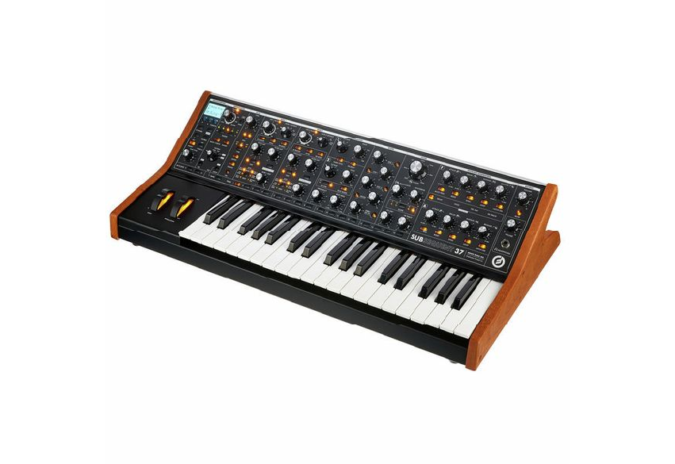
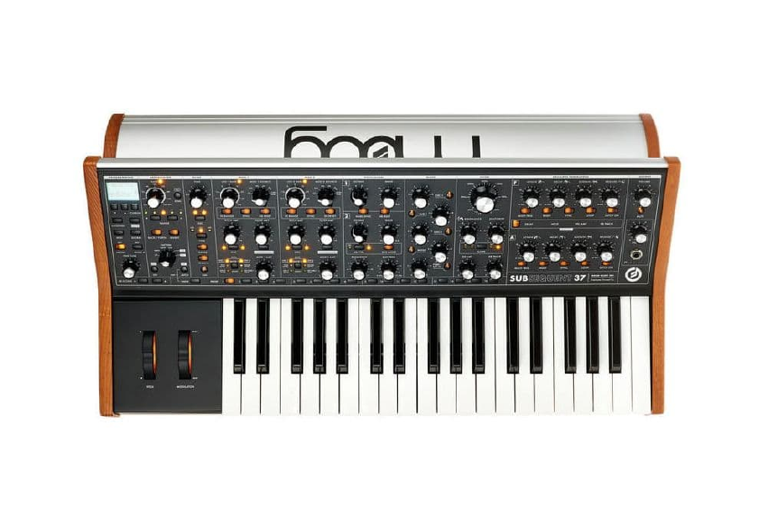

SINTETIZADOR
NUEVO
Moog Subsequent 37
Sintetizador analógico parafónico de 2 notas con 3 osciladores, filtro Ladder Moog y secuenciador integrado. Fabricado artesanalmente en Asheville, Carolina del Norte.
1.499 €
IVA incluido
En stock
Añadir al carrito- 2 osciladores de forma de onda variable
- Filtro Moog Ladder 20Hz–20KHz con pendientes de 6/12/18/24 dB/oct y MultiDrive
- MIDI In/Out, USB y CV/Gate
- 256 presets almacenables